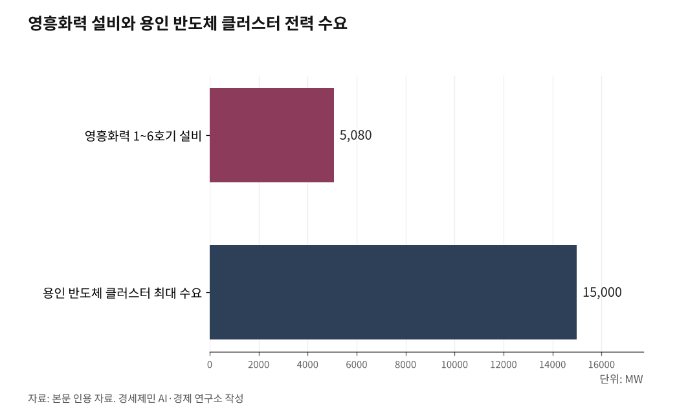

남동발전 SMR 원전 협약, 영흥도를 가리키는 정황
남동발전·현대건설 '석탄 연계 SMR' 협약, 대상은 폐지 예정 석탄부지
남동발전 석탄화력은 영흥과 삼천포뿐, 수도권에 전기 대는 곳은 영흥
용인 반도체와 데이터센터로 수도권 수요 폭증, 송전망 병목이 영흥 지목
한국남동발전이 폐지 예정 석탄발전소를 소형모듈원전(SMR)으로 바꾸는 협약을 맺었다. 회사는 "용지 선정도 정해진 게 없는 기초 연구"라고 했다. 그런데 남동발전이 가진 두 폐지 예정 석탄부지 가운데 수도권에 전기를 대는 곳은 영흥 한 곳뿐이다. 전기가 어디로 흘러가느냐를 따지면, 협약이 겨눈 자리가 드러난다.

1. '연구협약'에 박힌 '사업화'
남동발전은 지난 6월19일 현대건설과 '석탄발전설비 인프라 연계 SMR 기술개발 연구 협력체계 구축과 사업화 공동 추진' 업무협약을 맺었다. 이름부터 '사업화'가 들어갔다. 핵심은 리트로핏(retrofit, 기존 설비 개조)이다.
폐지할 화력발전소의 석탄보일러를 걷어내고 그 자리에 SMR을 앉힌다. 기존 발전 용지와 송배전망, 냉각수 설비, 운영 인력을 그대로 쓴다. 초기 투자비를 줄이고 사업 기간을 단축한다.
무엇보다 새 발전소 건설의 가장 큰 걸림돌인 송전망 부족을 건너뛴다. 단순 학술 연구로만 보기 어려운 대목이다.

2. 남동발전이 쥔 카드는 두 장
정부는 제11차 전력수급기본계획에서 2038년까지 노후 석탄화력을 단계로 없애기로 했다. 대상은 태안과 당진, 보령, 삼천포, 동해, 하동, 영흥이다. 이 가운데 남동발전 소유는 영흥과 삼천포 두 곳뿐이다. 태안은 서부발전, 당진과 동해는 동서발전, 보령은 중부발전, 하동은 남부발전 몫이다.
남동발전이 자사 부지에 협약을 적용한다면 후보는 영흥 아니면 삼천포로 좁혀진다. 회사가 '영흥 확정은 아니다'라고 선을 그어도, 손에 쥔 카드가 두 장뿐이라는 사실은 바뀌지 않는다.
3. 전기의 행선지가 가른다
두 카드는 전기가 흘러가는 곳이 다르다. 영흥화력은 인천 옹진에 있지만 생산 전력은 수도권으로 들어간다. 1~6호기 5080메가와트(㎿) 설비로 수도권 전력 사용량의 약 20%를 대왔다. 수도권 유일의 대형 석탄화력이다.
삼천포화력은 경남 고성에서 영남 계통에 전기를 낸다. 수도권 수요와는 사실상 무관하다.
지금 전력 문제의 병목은 수도권에 몰려 있다. 용인 반도체 클러스터 하나가 최대 15기가와트(GW), 국내 공급능력의 13%에 이르는 전력을 요구한다. 여기에 인공지능(AI) 데이터센터 수요가 겹친다.
그런데 동해안 원전에서 수도권으로 전기를 끌어오는 장거리 송전선로는 주민 반발로 수년째 늦어진다. 발전소를 새로 지어도 전기를 실어 나를 길이 없다.
영흥은 이 병목을 비켜간다. 이미 수도권 안에서 대형 송전망을 갖춘 부지다. 그 자리에 SMR을 앉히면 새 송전선로 없이 수도권에 무탄소 전력을 바로 댄다.
삼천포에 지어봐야 영남 계통에 물릴 뿐이다. 협약이 겨눈 자리가 영흥으로 좁혀지는 진짜 까닭이 여기 있다.
4. 수도권이 쓰고, 섬이 떠안는다
이 구도는 한국 전력의 오랜 모순을 그대로 드러낸다. 전기는 지방에서 만들고 수도권이 쓴다. 영흥은 옹진군 섬이다. 2004년 첫 가동 이후 20년 넘게 수도권 2600만 명이 쓸 전기의 5분의 1을 섬 하나가 감당했다.
SMR 리트로핏은 이 모순을 '수도권 안에서 발전'으로 봉합하려는 시도다. 송전망 갈등을 피하는 대신, 부담은 다시 같은 자리에 쌓인다.
인천은 이런 시설을 되돌린 기억이 있다. 30년 전 정부의 굴업도 방사성폐기물처분장 계획은 인천 시민사회 반발로 백지화됐다.
남동발전은 리트로핏을 지역 고용과 산업 기반을 지키는 '정의로운 전환' 모델이라고 내세운다. 지역은 정반대로 읽는다. 석탄 부담을 원전 부담으로 갈아끼우는 '가짜 전환'이라는 것이다.
같은 부지를 놓고 두 이름이 부딪친다. 판가름은 기술이 아니라 주민 수용성에서 난다.
5. 부딪치는 두 미래
영흥의 앞날을 두고 두 그림이 맞선다. 인천시는 영흥면 375만㎡에 해상풍력과 청정수소를 축으로 한 '영흥 미래에너지파크'를 준비한다. 재생에너지 거점 구상이다. 이세영 인천시 에너지정책과장은 "SMR 전환은 전혀 검토한 바 없고, 주민 수용성 때문에 생각할 수도 없다"고 했다.
인천 79개 시민사회단체는 지난 7월2일 인천시청 앞에서 기자회견을 열고 협약 철회를 요구했다. 어민들은 화력 온배수 피해도 풀리지 않았는데 원전 온배수까지 더한다며 맞섰다.
정부는 제12차 전력수급기본계획(2026~2040년)을 짜면서 원전과 SMR, 재생에너지를 함께 늘리는 쪽으로 방향을 잡았다. 그 흐름 위에서 남동발전의 협약이 나왔다. 회사 말대로 아직 영흥이 확정되지는 않았다.
다만 전기가 수도권으로 가는 부지, 송전망을 갖춘 부지라는 조건을 맞추는 곳은 남동발전 손에 영흥 하나뿐이다. 손가락이 가리키는 곳을 독자가 보면 된다.
※ 이 기사는 AI 프로그램 클로드를 활용해 작성했습니다.
참고문헌
"한국남동발전-현대건설 맞손…폐지 예정 석탄발전을 차세대 SMR로 전환", 스트레이트뉴스, 2026.6.19. https://www.straightnews.co.kr/news/articleView.html?idxno=305262
"영흥화력 핵발전 전환반대, 남동발전 연구중단·인천시 반대입장 표명촉구", 인천투데이, 2026.7.2. https://www.incheontoday.com/news/articleView.html?idxno=320784
"영흥화력발전소 이번엔 SMR 전환?… 반발하는 영흥주민들", 경인일보. https://www.kyeongin.com/article/1766657
"영흥발전본부 발전현황", 한국남동발전. https://www.koenergy.kr/kosep/hw/br/yh/yhhw04/main.do?menuCd=BR020203
"영흥화력발전소", 위키백과. https://ko.wikipedia.org/wiki/영흥화력발전소
"2038년까지 신규 원전 2기·SMR 1기 짓는다…11차 전기본 확정", 한국경제, 2025.2.21. https://www.hankyung.com/article/202502211067i
"반도체클러스터·AI센터 잇단 유치… 경기도 전력 인프라 한계 직면", 중부일보. https://www.joongboo.com/news/articleView.html?idxno=363707489
※ 이 기사는 인공지능을 활용해 작성했습니다.
관련기사
저작권자 © AI경세제민 무단전재 및 재배포, AI학습 및 활용 금지